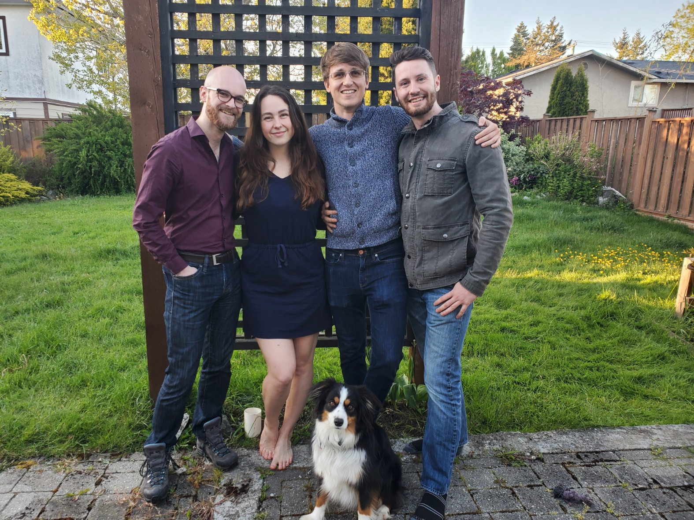

Shawnigan Village WaterWorks is a potable water treatment facility which services over 500 homes in the Shawnigan Village area. The first stage of filtration is a 50-micron filter to remove larger particulates in the lake water. We have developed a device which automatically cleans these filters, saving our client up to 10 hours per week. Our solution involves an array of solenoid-controlled nozzles and filter actuation to get the job done as efficiently as possible.

We would like to thank our sponsor Rod Lidstone for trusting us with his project, entertaining our ideas and always being willing to help when asked. This has been a fantastic and educational project that we are grateful to have been a part of.